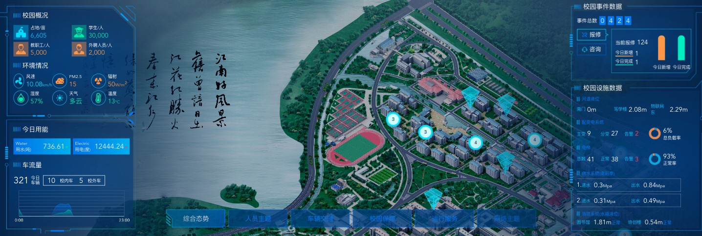

徐建明
前端开发工程师 / 无锡
基本信息
- 徐建明 / 男 / 25岁
- CET-4
- 初级
联系方式
技能点
教育经历
-
无锡职业技术学院 - 电子信息工程
-
江南大学 - 计算机技术与科学
工作经历
-
江苏世代信息技术有限公司－前端开发工程师
- 负责公司全部的前端工作
- 承包外部的活动页面
-
无锡路通视信网络股份有限公司－前端开发工程师
- 负责公司应急广播项目组的前台开发
- 负责公司应急广播项目组app的维护
个人项目
-
[项目]应急广播平台
- 技术栈：react+ice-work+leafletJS+echarts...
-
[目标]一个智能终端控制展示平台

-
[项目]江大态势感知系统
- 技术栈：vue+leafletJS+echarts...
-
[目标]一个校园数据展示大屏系统

-
[项目]雅迪提案系统(h5)
- 技术栈：vue+vant...
-
[目标]一个公司员工内部提案系统

-
[项目1]公司官网 地址
- 技术栈：h5+c3+jq
-
[目标]展示公司的企业文化和业务范畴
[团队]自己
[贡献]主要负责原型图的切取，加以c3动画更好的呈现公司业务，及调用百度推广api
[效果]如链接所示，完美的展示了公司企业信息和业务推广

-
[项目2]雅迪全民商城(小程序) 可自行搜索小程序名称进行查看
- 技术栈：微信小程序
-
[目标]通过邀请好友领取优惠券，实现雅迪电动车在线上的用户推广，实现用户的绑定与扩流
[团队]与 1 位后端
[贡献]分析项目需求，清洗并整理相关逻辑，理清用户的分类与逻辑
[效果]成为雅迪电动车线下发展线上的利器
-
[项目3]XX舆情平台
- 技术栈：vue+vue-router+elment+g2
-
[目标]实现舆情的展示与监控
[团队]与 1 位后端

-
[项目4]雅迪服务平台 可自行搜索小程序名称进行查看
- 技术栈：微信小程序
-
[目标]实现雅迪经销商的内购
[团队]与 1 位后端
[贡献]单功能页面，实现购买者的弹幕，和经销商电动车的内购优惠
[效果]实现雅迪内购平台
-
[项目5]政府债务管理系统
- 技术栈：微信小程序
-
[目标]实现政府债务的查看管理还款和提示


-
[项目6]制造原理之家 可自行搜索小程序名称进行查看
- 技术栈：微信小程序
-
[目标]实现一个企业入驻发布信息和交流的论坛，和企业的展示
[团队]与 1 位后端
[贡献]实现企业的入驻和帖子的发布管理，多级评论等功能
[效果]实现雅迪内购平台

-
[项目7]雅迪千面一面管理
- 技术栈：vue+vue-router+vant
-
[目标]实现经销商内部的车辆核实与管理
[团队]与 1 位后端
[效果]实现
-
[项目8]中华成功会音乐相册+贺卡 微信公众号圆梦门可查看
- 技术栈：h5+c3+jq
-
[目标]实现音乐相册+贺卡的制作与管理
-
[项目9]免疫规划云 微信公众号圆梦门可查看
- 技术栈：antdesign(dva框架)
-
[目标]实现医院的免疫规划和库存盘点


-
[项目10]雅迪世界杯
- 技术栈：js+c3+swiper
-
[目标]一个语音抽奖的活动

-
......
自我评价/期望
本人项目经验丰富，"多静多思考，反省不张扬"是我给自己总结的“十字箴言”，鞭策自己做人既不能以己度人，也不以人观己，要脚踏实地做事，坚持自己的梦想和本心。